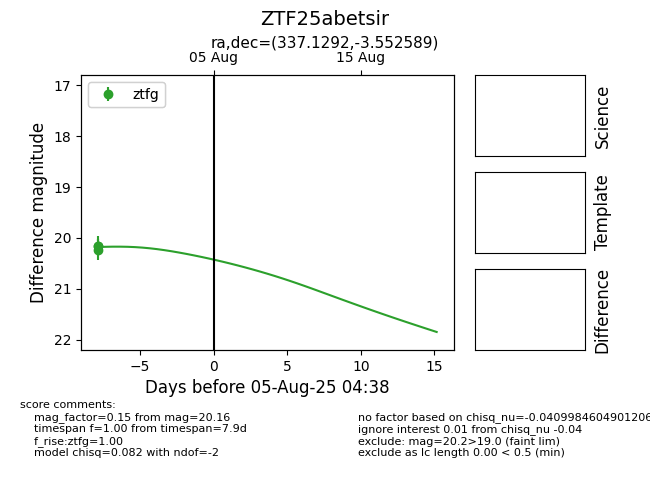

Target ZTF25abetsir at 2025-08-05 04:38, see:
FINK: fink-portal.org/ZTF25abetsir
Lasair: lasair-ztf.lsst.ac.uk/objects/ZTF25abetsir
ALeRCE: alerce.online/object/ZTF25abetsir
alt names
ZTF25abetsir (ztf,fink)
coordinates:
equatorial (ra, dec) = (337.1292,-3.55259)
galactic (l, b) = (61.2674,-48.53293)
photometry
last ztfg=20.16
3 ztfg detections
